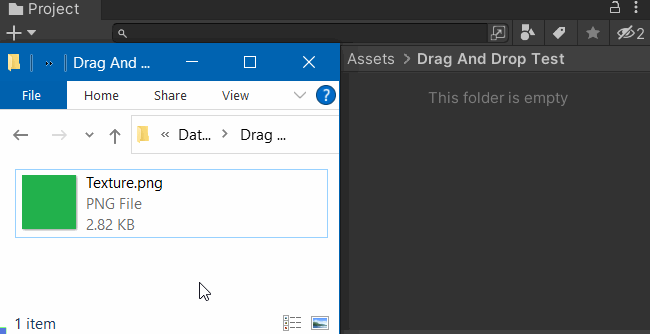
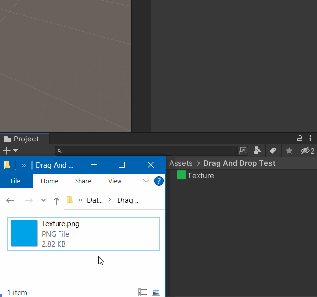
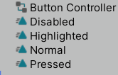

These features are only available in Inspector Gadgets Pro.
Advanced Drag And Drop
Normally when you Drag and Drop files into the Project window, Unity will create new assets for them every time:

But that's not always the most useful behaviour. For example, if you update the source file and want to replace the one in your Unity project, you would need to open it in your File Explorer and copy the new file outside of Unity to overwrite the existing one.
Inspector Gadgets streamlines that process by allowing you to hold Ctrl + Alt while you drop the files which causes it to show the Advanced Drag And Drop window with various options to determine how you want to handle those files:

- The options in the window all have tooltips explaining what they do.
- You can drag multiple files and folders at the same time.
- You must drop the files onto an asset in the Project window for this feature to work (i.e. you can't drop into empty space).
- The modifier keys can be changed in the Edit/Preferences window.
- While holding those keys and holding files over an asset, it will highlight that asset to indicate that releasing the drag will activate this feature (instead of the regular Drag and Drop).
- You can also use this feature when dragging assets within Unity and between Unity windows (as long as the destination project has Inspector Gadgets).
Drag And Drop Sub-Assets
Unity allows assets to be saved inside other assets to group them in the Project window, however it does not have an inbuilt way to add or remove those sub-assets manually so Inspector Gadgets gives you the ability to do so while holding Alt (or you can set a different modifier key in the Edit/Preferences window).
This can be very useful for things like UI animations where you might have many Animation Clips which are only used in a single Animator Controller:

You can extract a sub-asset back into a regular asset by dropping it onto a folder or onto its root asset. Unfortunately, it is not possible to just drop it into the blank area in the current folder.
Warning
Backup your work before using this feature.
Unfortunately, some asset types cannot have sub-assets and some cannot be sub-assets, but Unity gives no warning if that is the case and will simply make the attempt, give an unhelpful error, and irreversibly corrupt the asset. So this feature validates the asset types and if a combination is unknown it will ask you to test it by using Ctrl + D to Duplicate your assets before using it on your real assets.